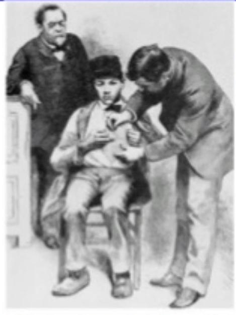

IMMUNOLOGY
INTRODUCTION
Course Facilitator: A. EKESA
- The main function of the immune system is to prevent or limit infections by microorganisms e.g bacteria, fungi, viruses
- Without our body's innate defense and specific resistance we would not be able to ward off damage or disease or to defend ourselves against pathogens
- Immune system is divided into 2 categories;
- Non-specific defence mechanisms - protect against any possible dangers
- Specific defence mechanisms - These are grouped together under the term immunity. Resistance is directed against only one specific invader.
DEFINITIONS
- Immunology: The branch of medical science that studies the body's immune system
- Immunity: This is a protective or defense mechanism of the body, which leads to healthy life.
- An antigen is anything that stimulates an immune response
- Epitope: it is the part of an antigen that is recognized by specific antibodies
- Antibody: these are protein complexes (immunologlobulins) produced against specific antigens
HISTORICAL BACKGROUND
History - Early Discoveries

- The scientific study of the immune system, known as immunology, dates from about the late 1800's.
- In 1796, the British physician Edward Jenner administrated the first vaccination (from the Latin vacca, meaning "cow"). To protect from the smallpox virus he vaccinated a child with a cowpox virus.
- Louis Pasteur discovered vaccines for cholera, anthrax, and rabies.
- In 1883, the Russian biologist Elie Metchnikoff discovered phagocytes.
- In 1890, Emil A. Behring and S. Kitasato discovered antitoxins (antibodies).
History - Further Breakthroughs

- In 1900, Karl Landsteiner discovered the main types of human blood groups.
- In the 1960s, the lymphocyte was identified as the cell responsible for both, cellular and humoral immunity.
- In 1975, C. Milstein and G.J. Köhler reported a technique for producing monoclonal antibodies.
Types of immunity

Immunity: Two Intrinsic Defense Systems
1. Innate (nonspecific/inborn) system responds quickly and consists of:
- First line of defense - intact skin and mucosae prevent entry of microorganisms
- Second line of defense - antimicrobial proteins, phagocytes, and other cells
- Inhibit spread of invaders throughout the body
- Inflammation is its distinctive characteristic and most important mechanism
Important components of innate immunity
(They are factors that limit entry of microorganisms into the body)
- Keratin layer of intact skin - Acts as mechanical barrier
- Lysozyme in tears and other secretions - Degrades peptidoglycan in bacterial cell wall
- Respiratory cilia - Elevate mucus containing trapped organisms
- Low pH in stomach and vagina - Retards growth of microbes
- Surface phagocytes - Ingest and destroy microbes (eg. alveolar macrophages)
- Normal flora of throat, colon and vagina - prevents colonization by pathogens
- Natural killer cells - Kill virus infected cells
- Neutrophils - Ingest and destroy microbes
- Macrophages and dendritic cells - Ingest and destroy microbes
- Cytokines e.g interleukins, interferons, tumor necrosis factor, chemokines, lymphokines - Important in cell signaling. Their release has an effect on the behavior of cells around them
- Complement system - blood proteins forming an attack complex creating holes on bacterial membranes
- Fever - Elevated temperature retards bacterial growth.
- Inflammatory response - Limits spread of microbes
Types of innate immunity
- It is of three types-
- Species Immunity
- Racial Immunity
- Individual Immunity
- Species immunity is the total immunity shown by all members of a species against pathogen; e.g. birds immune to tetanus.
- Racial immunity is that in which various races show marked difference in their resistance to certain infectious disease.
- Individual immunity is very specific for each and every individual despite having same racial background and opportunity for exposure.
2. Adaptive (specific/acquired) defense system
- Third line of defense - mounts attack against particular foreign substances
- Takes longer to act than the innate system
- Works in conjunction with the innate system though
Characteristics of Acquired Immunity:
(i) Specificity:
It is the ability to differentiate between various foreign molecules (for-eign antigens).
(ii) Diversity:
It can recognise a vast variety of foreign molecules (foreign antigens).
(iii) Discrimination between Self and Non-self:
It can recognise and respond to foreign molecules (non-self) and can avoid response to those molecules that are present within the body (self) of the animal.
(iv) Memory:
When the immune system encounters a specific foreign agent, (e.g., a microbe) for the first time, it generates immune response and eliminates the invader. This is called first encounter. The immune system retains the memory of the first encounter. As a result, a second encounter occurs more quickly and abundantly than the first encounter.
Types of Acquired Immunity
Acquired Immunity is of two types- active and passive immunity.
- Active immunity
It is induced by natural exposure to a pathogen or by vaccination. It can be categorized into two types- Naturally acquired and Artificially acquired active immunity.
- Passive immunity
Passive immunity is achieve by transfer of immune products, such as antibody or sensitized T-cells, from an immune individual to non immune one. It is of two types- Naturally acquired and Artificially acquired passive immunity
Mechanism of active immunity
- Body's immune system provide protection by synthesizing antibodies or immunoglobulins in response to an antigen.
- Primary immune response takes place when the host is attacked by certain microbes for first time. The antibodies start to generate after certain period as the binding of an antigen with its particular antibody is very specific.
- Secondary immune response occurs when an individual is being attacked by the same antigen subsequently. It is a rapid process.
- Acquired active immune response takes two distinct forms- humoral and cell mediated response.
HERD IMMUNITY
Herd immunity (also called herd effect, community immunity, population immunity, or social immunity) is a form of indirect protection from infectious disease that occurs when a large percentage of a population has become immune to an infection, whether through previous infections or vaccination, thereby providing a measure of protection for individuals who are not immune.
HERD IMMUNITY CONT..
- In a population in which a large proportion of individuals possess immunity, such people being unlikely to contribute to disease transmission, chains of infection are more likely to be disrupted, which either stops or slows the spread of disease.
- The greater the proportion of immune individuals in a community, the smaller the probability that non-immune individuals will come into contact with an infectious individual, helping to shield non-immune individuals from infection.
NONSPECIFIC / INBORN / INNATE IMMUNITY
A) First Line of Defense (External defenses)
i) Surface Barriers
- Skin, mucous membranes, and their secretions make up the first line of defense
- Keratin in the skin: Presents a physical barrier to most microorganisms
- Mucosae provide similar mechanical barriers
ii) Epithelial Chemical Barriers
Epithelial membranes produce protective chemicals that destroy microorganisms
- Skin acidity ( pH of 3 to 5) inhibits bacterial growth
- Sebum contains chemicals toxic to bacteria
- Stomach mucosae secrete concentrated HCl and protein-digesting enzymes
- Saliva and lacrimal fluid contain lysozyme (destroys the cell walls of certain bacteria)
- Mucus traps microorganisms that enter the digestive and respiratory systems
iii) Respiratory Tract Mucosae
- Mucus-coated hairs in the nose trap inhaled particles
- Mucosa of the upper respiratory tract is ciliated
- mucociliary activity removes dust and bacteria away from lower respiratory passages
iv) Physical and chemical barriers to infection
- Anatomical areas confer mechanical and chemical control of pathogens including intact skin, sebaceous glands, cilia, wax, mucous, tears, saliva, low pH, sweat and stomach acid
B) Second Line of Defense (Internal Defenses)
The body uses nonspecific cellular and chemical devices to protect itself
- Phagocytes (cells that engulfs and digests debris and invading microorganisms)
- natural killer (NK) cells
- Inflammatory response enlists macrophages, mast cells, WBCs, and chemicals
- Antimicrobial proteins (antibodies) in blood and tissue fluid
1. Phagocytes
- Macrophages are the chief phagocytic cells
- Free macrophages wander throughout the body in search of cellular debris
- Kupffer cells (liver) and microglia (brain) are fixed macrophages
- Neutrophils become phagocytic when encountering infectious material
- Mast cells bind and ingest a wide range of bacteria
Mechanism of Phagocytosis
- Microbes adhere to the phagocyte
- Pseudopods engulf the particle (antigen) into a phagosome
- Phagosomes fuse with a lysosome to form a phagolysosome
- Invaders in the phagolysosome are digested by proteolytic enzymes
- Indigestible and residual material is removed by exocytosis

2. Natural Killer (NK) Cells
- Cells that can kill cancer cells and virus-infected cells
- Natural killer cells:
- Are a small, distinct group of large granular lymphocytes
- Secrete potent chemicals that enhance the inflammatory response
3. Inflammation: Tissue Response to Injury
- The inflammatory response is triggered whenever body tissues are injured
- Prevents the spread of damaging agents to nearby tissues
- Sets the stage for repair processes
- The four cardinal signs of acute inflammation are redness, heat, swelling, and pain
Inflammation Responses
i) Flood of inflammatory mediators
- Begins with a flood of inflammatory chemicals released into the extracellular fluid
- Inflammatory mediators (chemicals) :
- Include kinins, prostaglandins (PGs), complement, and cytokines
- Cause local small blood vessels to dilate, resulting in hyperemia
ii) Vascular Permeability
- Chemicals released by the inflammatory response increase the permeability of local capillaries
- Exudate (fluid containing proteins, clotting factors, and antibodies):
- Seeps into tissue spaces causing local edema (swelling), which contributes to the sensation of pain
iii) Edema
- The rapid flow of protein-rich fluids into tissue spaces (edema):
- Helps to dilute harmful substances
- Brings in large quantities of nutrients needed for repair
Causes of inflammation
- The numerous causes;Pathogens
- physical agents, e.g. heat, cold, mechanical injury, ultraviolet and ionizing radiation
- chemical agents
- organic, e.g. microbial toxins and organic poisons, such as weed killers
- inorganic, e.g. strong acids, alkalis.
Acute Inflammation
- is typically of short duration, e.g. days to a few weeks, and may range from mild to very severe, depending on the extent of the tissue damage.
- Events in acute inflammation:
- increased blood flow
- accumulation of tissue fluid
- migration of leukocytes
- Increased core temperature
- pain and suppuration.
Chemicals released during inflammation
- Prostaglandins
- Histamine
- Bradykinin
- Serotonin
- Heparin
4. Antimicrobial Proteins
- Enhance the innate defenses by:
- Attacking microorganisms directly
- Hindering microorganisms' ability to reproduce
- The most important antimicrobial proteins are:
- Cytokines e.g interferons
- Complement proteins
- C- reactive protein
a) Cytokine Barriers:
- Cytokines are usually Chemical messengers of immune cells
- Are low molecular weight proteins that stimulate or inhibit function of immune cells.
- They are involved in the cell to cell communication.
- Cytokines include:
- interleukins produced by leucocytes,
- lymphokines produced by lymphocytes, tumour necrosis factor
Interferon (IFN)
- Genes that synthesize IFN are activated when a host cell is invaded by a virus
- Interferon molecules leave the infected cell and enter neighboring cells
- Interferon stimulates the neighboring cells to activate genes for antiviral protein which blocks viral reproduction in the neighboring cell

Interferon Family
- Lymphocytes secrete gamma (γ) interferon, but most other WBCs secrete alpha (α) interferon
- Interferon's (IFNs). Interferon's protect against viral infection of cells.
b) Complement system
- 20 or so proteins that circulate in the blood in an inactive form
- Proteins include C1 through to C9, factors B, D, and P, and regulatory proteins
- Provides a major mechanism for destroying foreign substances in the body
- Amplifies all aspects of the inflammatory response
- Kills bacteria and certain other cell types (our cells are immune to complement)
c) C-reactive Protein (CRP)
- CRP is produced by the liver in response to inflammatory molecules
- CRP is a clinical marker used to assess for:
- The presence of an acute infection
- An inflammatory condition and its response to treatment
Fever
- Abnormally high body temperature in response to invading microorganisms
- The body's thermostat is reset upwards in response to pyrogens, chemicals secreted by leukocytes and macrophages exposed to bacteria and other foreign substances
- High fevers are dangerous as they can denature enzymes
- Moderate fever can be beneficial, as it causes:
- An increase in the metabolic rate, which speeds up tissue repair
IMMUNOLOGICAL SURVEILLANCE
- Done by lymphocytes, called natural killer (NK) cells,
- NK constantly patrol the body searching for abnormal cells e.g. virus infected cell or cancer cell
- Detected abnormal cells are killed by the NK cell.
- NK cell are less selective than T- and B- lymphocytes
SPECIFIC IMMUNITY
- Develops in adult body upon encounter with invaded microbe or specific invader
- Activated when non specific immunity is overwhelmed
- Has two key attributes not seen with non-specific defenses:
- Specificity;
- memory
a) Specificity
- immune response is directed against one antigen and no others
b) Immunological memory
- This means that the immune response on subsequent exposures to the same antigen is generally faster and more powerful
Cell types in specific immunity
- The cell type involved in immunity is the lymphocyte
- This cell is manufactured in the bone marrow
- They are further processed into two functionally distinct types: T-lymphocyte and B lymphocyte.
T-LYMPHOCYTES
- These are processed by the thymus gland
- The hormone thymosin promotes the process
- a mature T-lymphocyte has been programmed to recognise only one type of antigen
- T-lymphocytes provide cell-mediated immunity
B-LYMPHOCYTES
- These are both produced and processed in the bone marrow.
- They produce antibodies (immunoglobulins),
- each B-lymphocyte targets one specific antigen
- B-lymphocytes provide antibody-mediated immunity
CELL-MEDIATED IMMUNITY (CMI)
Immunity in which T lymphocytes deal with the antigen
- When they encounter their antigen for the first time, T-lymphocytes become sensitised to it.
- If the antigen has come from outside the body, it needs to be 'presented' to the T lymphocyte by Antigen Presenting Cells (APCs) or Tumor cell markers
- When an antigen is presented to the T-lymphocyte, it stimulates the division and proliferation (clonal expansion) of the T-lymphocyte
- Four main types of specialized T-lymphocyte are produced, each of which is still directed against the original antigen, but which will tackle it in different ways.
i) Memory T-cells
They provide cell mediated immunity by responding rapidly to another encounter with the same antigen.
ii) Cytotoxic T -cells;
The main role of cytotoxic T -lymphocytes is in destruction of abnormal body cells, e.g. infected cells and cancer cells.
iii) Helper T-cells
- Are the commonest of the T-lymphocytes
- their main functions include:
- production of special chemicals called cytokines, e.g. interleukins and interferons, which support and promote cytotoxic T-lymphocytes and macrophages
- cooperating with B-lymphocytes to produce antibodies
iv) Suppressor T-cells
- These cells act as 'brakes', turning off activated T- and B-lymphocytes.
- This limits the powerful and potentially damaging effects of the immune response.
ANTIBODY-MEDIATED (HUMORAL) IMMUNITY
- Carried out by antibodies produced by plasma B cells.
- B-lymphocytes recognize and bind antigen particles without having to be presented with them by an antigen-presenting cell.
- Once its antigen has been detected and bound, and with the help of an activated helper T lymphocyte, the B-lymphocyte enlarges and begins to divide (clonal expansion).
- It produces two functionally distinct types of cells;
- plasma cells and
- memory B-cells.
Plasma Cells
- These secrete massive quantities of antibodies (immunoglobulins) into the blood.
- Antibodies are carried throughout the tissues.
- Plasma produce millions of molecules of only one type of antibody, which targets the specific antigen that originally bound to the B-lymphocyte.
Functions Of Antibodies
- bind to antigens, labelling them as targets for other defence cells such as cytotoxic T-cells macrophages
- bind to bacterial toxins, neutralising them
- activate complement system.
Classes Of Immunoglobulins
- There are five classes each with distinct chemical structures and biological functions within the human body
- Immunoglubulin G
- Immunoglubulin A
- Immunoglubulin M
- Immunoglubulin D
- Immunoglubulin E
IgG:
- Most antibodies (Abs) to infection belong to this class.
- It is widely distributed in the tissue fluids and are equally available in the intra and extravascular spaces.
- It can cross the placenta, and so it provides passive immunity to the newborn.
IgM:
- This is the first type produced by the maturing foetus, and it is the main type responsible for the primary immune response.
- It is mainly intravascular but it does not cross the placenta.
IgA:
- Found in high concentration in the external secretions: Colostrum, Saliva, tears and intestinal and bronchial secretions.
- Because of this, IgA is part of the first line of defense against infectious agents.
IgE:
- Very low in serum and tissue fluids.
- It has a particular affinity to fix to tissues and so it is able to sensitize mast cells so that upon contact with Antigens, the biologically active material present in mast cells (histamine) is released. Because of this it is called a "reagin".
IgD:
Antibody activity has rarely been demonstrated, and the biologic function is uncertain
Memory B-cells
They rapidly respond to another encounter with the same antigen by stimulating the production of antibody-secreting plasma cells.
ANTIGEN-ANTIBODY INTERACTION
- Antigen-antibody interaction, or antigen-antibody reaction, is a specific chemical interaction between antibodies produced by B cells of the white blood cells and antigens during immune reaction.
- The antigens and antibodies combine by a process called agglutination. It is the fundamental reaction in the body by which the body is protected from complex foreign molecules, such as pathogens and their chemical toxins.
- In the blood, the antigens are specifically and with high affinity bound by antibodies to form an antigen-antibody complex. The immune complex is then transported to cellular systems where it can be destroyed or deactivated.
- There are several types of antibodies and antigens, and each antibody is capable of binding only to a specific antigen. The specificity of the binding is due to specific chemical constitution of each antibody.
ACQUIRED IMMUNITY
- Immunity may be acquired naturally or artificially and both forms may be active or passive
- The immune response to an antigen following the first exposure (primary immunization) is called the primary response.
- Second and subsequent exposures give rise to a secondary response
The Primary Response
- There is a slow and delayed rise in antibody levels, peaking 1-2 weeks after infection.
- This delayed response reflects the time required to activate the T-lymphocyte system, which then stimulates B lymphocyte division.
The Secondary Response
On subsequent exposures to the same antigen, the immune response is much faster and significantly more powerful, because of memory B-lymphocytes
Active Immunity
It means that the individual has responded to an antigen and produced his own antibodies, lymphocytes are activated and the memory cells formed provide long-lasting resistance.
Passive Immunity
In passive immunity the individual is given antibodies produced by someone else. The antibodies eventually break down, so passive immunity is relatively brief.
Natural Active Acquired Immunity
The body may be stimulated to produce its own antibodies by:
- Having the disease.
- Having a subclinical infection.
Artificial Active Acquired Immunity
- This type of immunity develops in response to the administration of dead or live artificially weakened pathogens (vaccines) or deactivated toxins (toxoids).
- The vaccines and toxoids stimulate the development of immunity but they cannot cause the disease.
- Many infectious diseases can be prevented by artificial immunization- Vaccine administration
- Active immunization against some infectious disorders gives lifelong immunity, e.g. diphtheria, whooping cough or mumps.
- In other infections revaccination is necessary.
- In older or poorly nourished individuals, lymphocyte production, especially B-lymphocytes, is reduced and the primary and secondary response may be inadequate.
Passive Artificially Acquired Immunity
- In this type, ready-made antibodies, in human or animal serum, are injected into the recipient.
- The source of the antibodies may be an individual who has recovered from the infection, or animals, commonly horses, that have been artificially actively immunized.
- Specific immunoglobulins may be administered prophylactically to prevent the development of disease in people who have been exposed to the infection, or therapeutically after the disease has developed.
AUTOIMMUNE DISEASES
- These are diseases that occur when immune reactions to host antigens develop (one's immune system attacking self)
- Most of autoimmune diseases are antibody mediated
- They include;
- Rheumatoid arthritis
- Myasthenia gravis
- Hashimotos' disease
- Graves disease
Rheumatoid Arthritis
- The body produces antibodies to the synovial membranes
- The antibody called rheumatoid factor can be detected in the blood.
- It leads to chronically inflamed joints that are stiff, painful and swollen.
Hashimoto's disease
The body makes antibodies to thyroglobulin, leading to destruction of thyroid hormone, and hypo secretion of the thyroid.
Graves' disease
- The body makes antibodies to thyroid cells.
- Unlike Hashimoto's disease, however, the effect of the antibodies is to stimulate the gland, with a resultant hyperthyroidism
Autoimmune haemolytic anaemia
In this, individuals make antibodies to their own red blood cells, leading to haemolytic anaemia.
Myasthenia gravis
- antibodies are produced that bind to and block the acetylcholine receptors of neuromuscular junctions.
- The transmission of nerve impulses to muscle fibers is therefore blocked.
- This causes progressive and extensive muscle weakness
IMMUNODEFICIENCY
- Means compromise of the immune system
- It can be;
- primary i.e. genetically mediated and occurs in infancy
- Secondary i.e. acquired later in life as a result of; Malnutrition , Acute infections, HIV etc
- There is a tendency for recurrent infections
Acquired Immune Deficiency Syndrome (AIDS)
- HIV has an affinity for cells that have a protein receptor called CD4 in their membrane e.g. T-lymphocytes, monocytes, macrophages, and some B-lymphocytes
- Helper T-cells are the main cells involved. When infected their number is reduced, causing suppression of both antibody-mediated and cell-mediated immunity
- This leads to widespread opportunistic infections
THE END